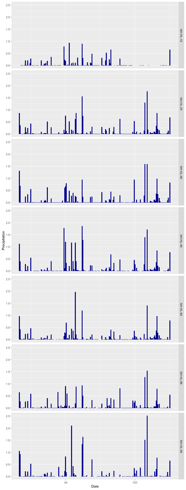
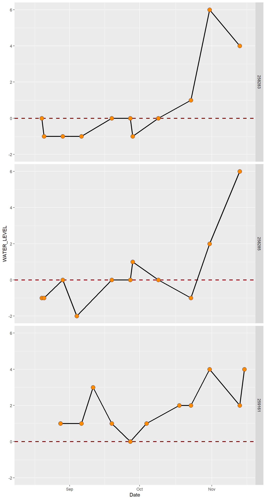
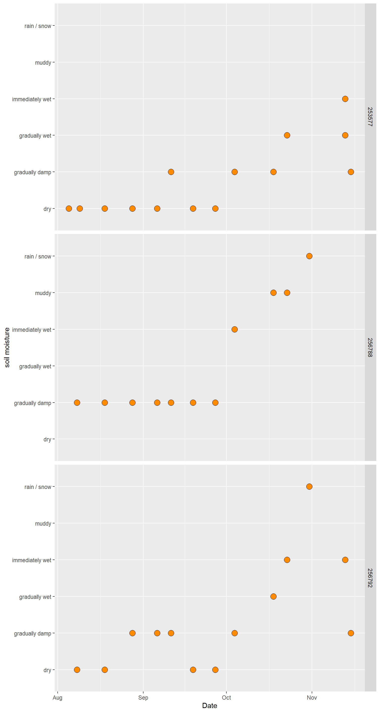
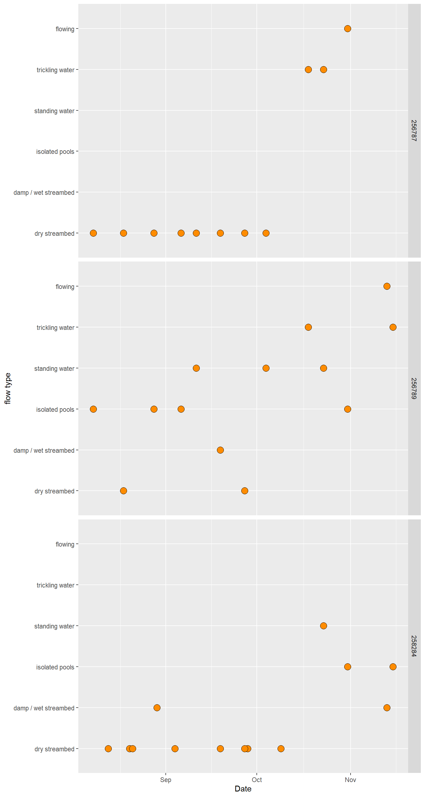

Date: 11/18/2020
Download the project folder here.
Make sure to download the entire folder (not just the contents).
You can open the Rproject directly by double-clicking on the file which will launch Rstudio, or once you have opened Rstudio open the project folder using File -> Open Project or using the Rproj icon in the top right corner above the environment panel.
We need to install an additional package to allow us to deal with dates. Remember, you only need to do this once.
Let’s go ahead and load the libraries we are going to use for this lab - remember anytime you restart your Rsession (e.g. by closing Rstudio or closing your project) you need to reload your libraries even if your environment is loaded/re-established.
We are also going to load a custom function that will allow us to combine two plots in a single figure for easier comparison.
Learning Objectives
After completing this lab you should understand
The IUCN classifies protected areas into seven categories.
► Question 15.1
Go to the IUCN website outlining the descriptions for each category. For each give brief description of the category, including the primary goal, distinguishing features, the role in the landscape, and what makes this category unique.
► Question 15.2
Find a local example for each category, start in your home state if you cannot find anything there expand your search to outside of New England. Consider why some of these categories of protected areas could be unlikely to be found here in the Northeast.
The protected areas that fall into the categories described above are generally public lands (government-owned). Frequently, we think of the creation and maintenance of protected areas being something that falls under the responsibility of national and local governments. Increasingly, corporations, land trusts, and even individuals are establishing protected areas by setting aside tracts of land for conservation. One option to do this is through conservation easements.
A conservation easement is a voluntary, legally-binding agreement between the landowner and a land trust or government area that limits the uses of the land to protect it in perpetuity. The exact details in terms of restriction will vary from contract to contract but a core component is that the land cannot be developed, in return the owner gets certain tax credits/benefits. Overall, a conservation easement allows the owner to retain the private ownership and most of the private property rights and the rights to the resources on the land. Putting private land into a conservation easement does not automatically make properties open to the public. Not all conservation easements are on privately owned land, some land trusts also acquire land with high conservation value.
One of the sites for our semester long field & stream trip(ish) is a conservation easement held by the Piscataquog Land Conservancy.
► Question 15.3
Go to the website for the Piscataquog Land Conservancy and use this specific example to describe what a land trust/land conservation organization does, what the central goal is, and what role they plan in conservation in generatl and specifically for landscape-level conservation.
Piscataquog Land Conservancy holds a range of properties, including Pulpit Rock Conservation Area.
► Question 15.4
Use the listing of different properties they hold an interest in or a conservation easement on to give a description of how many properties are included, how many are publicly accessible, how large the geographic region is they serve, and what type of features they are designed to conserve.
► Question 15.5
Use the description of the website to give brief description of Purplit Rock Conservation Area, its purpose, and what type of features it is designed to protect. Then give a brief impression of the area from your visit to explain why it can be important to have these types of conservation areas that are accessible to the public.
In class, we discussed the importance of landscape-level conservation and how management of a mosaic of different habitat patches encompassing a range of quality and size from those where habitat has been converted for human-use (e.g. agriculture, urban areas), heavily degraded patches (e.g. due to industrial pollution), to natural habitats. Many remaining natural habitats are small, fragmented, and disconnected which is one reason why designing protected areas to function as a network is becoming increasingly important.
For conservation management, the importance of balancing the needs of humans and of biodiversity is increasingly being recognized and stated as an explicit goal to increase efficacy and ensure long-term success. Realistically, it is not possible to protect all areas and completely ignore all needs for access to goods and services. Human-well being is intrinsically tied to well functioning ecosystems - but precisely because of the benefits we gain from ecosystem services, some of which require direct access. This is where conservation and management blend as management of natural resources can play an important roll in limiting the effects of (over)exploitation which can become a significant driver of biodiversity loss when practiced in a unsustainable way. And even though habitats may be degraded and no longer pristine they can still serve as viable habitats for species and landscape-level management plans (e.g. ecosystem-based management plans) regularly incorporate and account for unprotected areas in the landscape.
Urbanization generally results in habitat loss and the loss of biodiversity has been demonstrated to be correlated to the density of the human population. Some species have been able to adapt to urban habitats and are commonly found in city green spaces, urban streams or ponds, in golf courses, or among buildings, bridges and other infrastructure. Increasingly, urban planning incorporates increasing biodiversity as a goal, for example by planning for extensive green spaces, parks, woods, and grassland or by replacing the physical, artificial infrastructure with green infrastructure, for example by maintaining natural wetlands for drainage and storage instead of pipelines or by encouraging homeowners to create rain gardens so water will drain into the groundwater instead of run-off needing to be managed with drains.
► Question 15.6
Consider the area around the boat ramp above the dam we used to as a water-level monitoring location and the Piscataquog River Park determine where you think it broadly fits in in the context of lanscape-level conservation and urban planning, including what you think its central purpose is, what uses it has, what ecosystem services it contributes.
Citizen Science or volunteer monitoring is scientific research where data collection for specific projects is gathered at least in part by non-professional scientists. Frequently, these projects make use of the ubiquity of smartphones allowing users to gather and upload data using an app.
Over the course of the semester, we used the Crowdwater App, a Citizen Science project out of the University of Zurich, to collect supplemental data to enable improved modeling of floods and droughts. Crowdwater uses a geocaching-type approach where “spots” (measuring stations) can be found using a smart phone app and navigated to using the built-in maps and any user can add additional observations. The generated data can be used to update hydrological models predicting streamflow which have important roles for flood/drought prediction and water management decisions.
By contrast, the Community Collaborative Rain, Hail and Snow Network (CoCoRaHS) is a community-based network of volunteers that is working towards measuring and mapping precipitation (rain, hail, and snow) using low-cost measurement tools. Their website has instructions on how to build simple tools, and they offer training as well to ensure the quality of the data. All the measurements can be accessed from a database hosted on their website.
► Question 15.7
Compare and contrast these two citizen’s science projects including the type of data they are trying to gather and for what purpose, the quality of the data, committment level of volunteers, the amount of training involved, and why it is more helpful to create networks of volunteers for this type of data rather than more traditional methods.
► Question 15.8
Give a brief assessment of the level of intuitiveness and ease of use of the crowdwater app (did you run into problems? if so had you read the instructions) and argue how reliable you think the data is.
One issue with citizen’s science data can be a lack of quality control. The virtual staff gauge is used to determine relative differences in water level using water classes. To be able to use the data it is important that a there is a minimum resolution (how frequently measurements are taken) and that measurements can be taken in an unbiased way.
Let’s take a quick look at the quality of our water level measurements using the virtual staff gauge. In our data folder there is a pdf with the original measurement initializing the virtual staff gauge and each of the measurements side by side. Go through each picture and assess the water level relative to the original image for each measurement and enter your assessments into the google spreadsheet in the data subdirectory of our project folder.
► Question 15.9
Once the data set has been completed give a quick description of how you can use this data set to determine the quality of the data, then evaluate how reliable you think our data set is and suggest how the accuracy could be imporoved (consider things like the initial placement of the virtual staff gauge, pictures taken, plattform used to upload the data).
I have downloaded the precipitation observations for all NH stations gathered by the CoCoRaHS network from May of this year until 11/17/2020. Let’s start by loading the data set.
precip <- read_delim("data/NH_precipitation.txt", delim = "\t") %>%
filter(StationNumber %in% c(" NH-HL-19",
" NH-HL-25",
" NH-HL-48",
" NH-HL-49",
" NH-HL-84",
" NH-HL-96",
" NH-HL-99")) %>%
mutate(Date = mdy(ObservationDate),
JulianDay = yday(Date),
Month = month(Date, label = TRUE),
TotalPrecipAmt = as.numeric(TotalPrecipAmt))Let’s take a look at the individual stations.
Now, let’s plot the daily precipitation over summer.
ggplot(precip, aes(x = Date, y = TotalPrecipAmt)) +
geom_bar(stat = "identity", color = "darkblue", fill = "darkblue") +
facet_grid(StationNumber ~ .) +
labs(x = "Date", y = "Precipitation")Figure 15.1: Daily precipitation recorded at CoCoRaHS measuring stations throughout New Hampshire.
The US Climate Database lists the average high and average precipitation for each month. Let’s see how our data compares.
Table 15.1: Minimum, maximum, mean +/- std of monthly precipitation.
| Month | min | max | mean | std | total |
|---|---|---|---|---|---|
| May | 0 | 1.30 | 0.09 | 0.22 | 16.82 |
| Jun | 0 | 1.77 | 0.06 | 0.18 | 10.83 |
| Jul | 0 | 2.10 | 0.20 | 0.40 | 37.71 |
| Aug | 0 | 0.70 | 0.06 | 0.13 | 11.18 |
| Sep | 0 | 0.94 | 0.05 | 0.14 | 8.09 |
| Oct | 0 | 2.51 | 0.18 | 0.41 | 31.79 |
| Nov | 0 | 0.82 | 0.07 | 0.18 | 6.78 |
► Question 15.10
Compare the levels observed here with the monthly normals recorded on the US Climate Data base for Manchester, NH.
You can assess drought levels in New Hampshire in the drought portal
► Question 15.11
Given our precipitation and drought data, argue how you would expect our monitoring of water levels, temporal streams, and soil moisture to look across our sampling period.
We have different categories of measurements to compare.
Table 15.2: Crowdwater App spots at both sample locations for three categories of measuremts.
| CATEGORY | ROOT_ID | LATITUDE | LONGITUDE |
|---|---|---|---|
| soil moisture | 256788 | 42.9442 | -71.5987 |
| temporary stream | 256787 | 42.9445 | -71.5962 |
| temporary stream | 256789 | 42.9450 | -71.6053 |
| virtual scale | 259161 | 42.9452 | -71.6002 |
| soil moisture | 256792 | 42.9469 | -71.6081 |
| soil moisture | 253577 | 42.9481 | -71.6094 |
| virtual scale | 258283 | 42.9903 | -71.4919 |
| temporary stream | 258284 | 42.9904 | -71.4922 |
| virtual scale | 258285 | 42.9949 | -71.4946 |
Let’s start with the changes in water levels.
levels <- read_delim("data/crowdwater.txt", delim = "\t") %>%
filter(CATEGORY == "virtual scale") %>%
separate(SPOTTED_AT, into = c("tmp1", "tmp2"), sep = " ") %>%
mutate(Date = mdy(tmp1),
JulianDay = yday(Date))
ggplot(levels, aes(x = Date, y = WATER_LEVEL)) +
geom_hline(yintercept = 0, color = "darkred", linetype = "dashed", size = 1) +
geom_line(size = 1) +
geom_point(size = 4, shape = 21, fill = "darkorange", color = "black") +
facet_grid(ROOT_ID ~ .)Figure 15.2: Change in water level at crowdwater measuring spots
► Question 15.12
Give a brief description of the changes in water level at the three sampled locations in comparison to each other.
Now, lets take a look at our soil moisture measurements.
soil <- read_delim("data/crowdwater.txt", delim = "\t") %>%
filter(CATEGORY == "soil moisture") %>%
separate(SPOTTED_AT, into = c("tmp1", "tmp2"), sep = " ") %>%
mutate(Date = mdy(tmp1),
JulianDay = yday(Date),
MOISTURE = ordered(MOISTURE, levels = c("dry",
"gradually damp",
"gradually wet",
"immediately wet",
"muddy",
"rain / snow")))
ggplot(soil, aes(x = Date, y = MOISTURE)) +
geom_point(size = 4, shape = 21, fill = "darkorange", color = "black") +
facet_grid(ROOT_ID ~ .) +
labs(x = "Date", y = "soil moisture")Figure 15.3: Change in soil moisture at crowdwater measuring spots
► Question 15.13
Give a brief description of the changes in soil moisture at the sampled locations in comparison to each other.
Finally, let’s take peak at our temporary streams.
stream <- read_delim("data/crowdwater.txt", delim = "\t") %>%
filter(CATEGORY == "temporary stream") %>%
separate(SPOTTED_AT, into = c("tmp1", "tmp2"), sep = " ") %>%
mutate(Date = mdy(tmp1),
JulianDay = yday(Date),
FLOW_TYPE = ordered(FLOW_TYPE, levels = c("dry streambed",
"damp / wet streambed",
"isolated pools",
"standing water",
"trickling water",
"flowing")))
ggplot(stream, aes(x = Date, y = FLOW_TYPE)) +
geom_point(size = 4, shape = 21, fill = "darkorange", color = "black") +
facet_grid(ROOT_ID ~ .) +
labs(x = "Date", y = "flow type")Figure 15.4: Change in flow type at crowdwater measuring spots
Page built: 2020-11-18